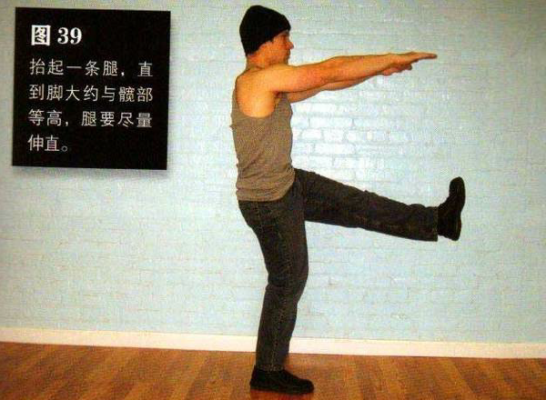
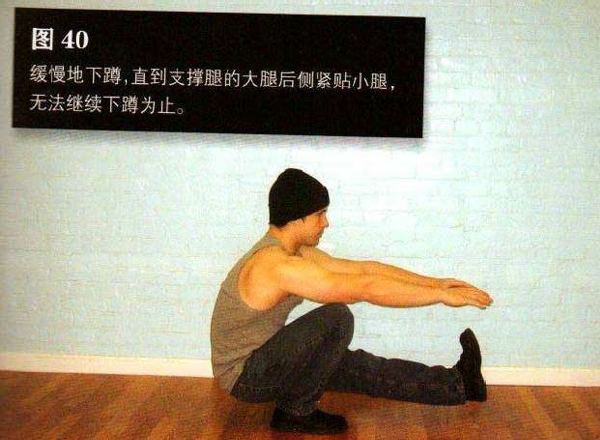

直立，抬起一条腿，直到脚大约与髋部等高，腿要尽量伸直，双臂在胸前前伸。如果你在之前几式上已经花了大量时间，那么这些对你来说不会太难。
然后弯曲髋部与支撑腿的膝盖。你应该有控制地放低身体，不要一下蹲到底。缓慢地下蹲，直到支撑腿的大腿后侧紧贴小腿，无法继续下蹲为止。此时，你的腹部应该与支撑腿的大腿紧贴在一起。这是该动作的最低点。在紧张状态下，暂停一下（数一个数），然后单腿发力把自己推回到起始姿势。注意，千万不要借助惯性起身。在动作过程中，背部始终挺直，抬起的腿始终离地，而支撑腿则应稳稳地踩在地上。到达动作最高点时暂停一下，然后再下蹲。
初级标准：1 组，5 次（每侧）
中级标准：2 组，各 10 次（每侧）
高级标准：2 组，各 50 次（每侧）